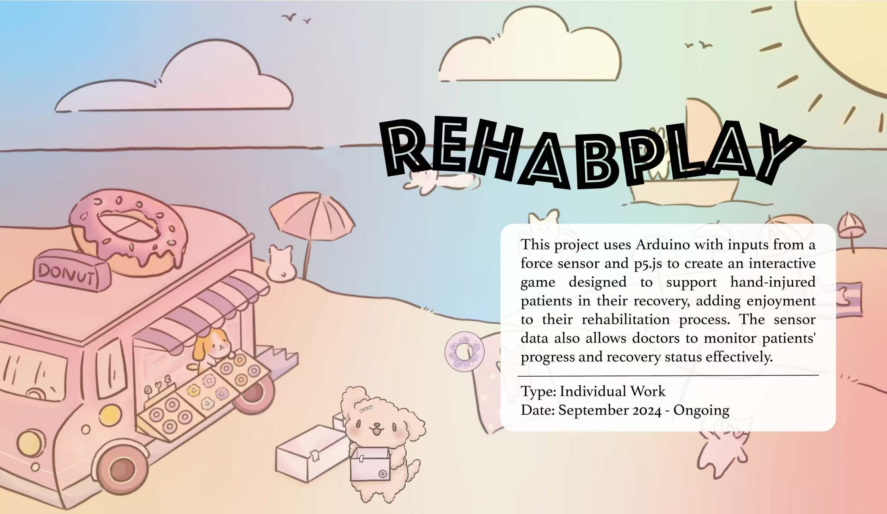
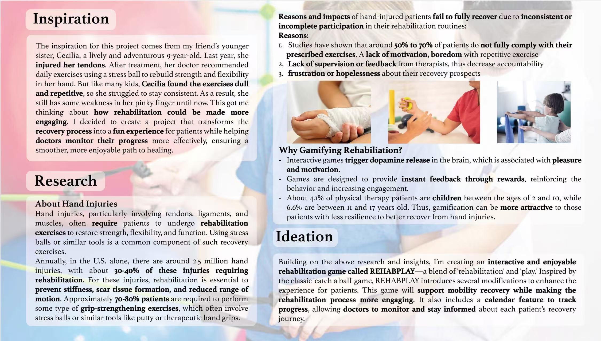
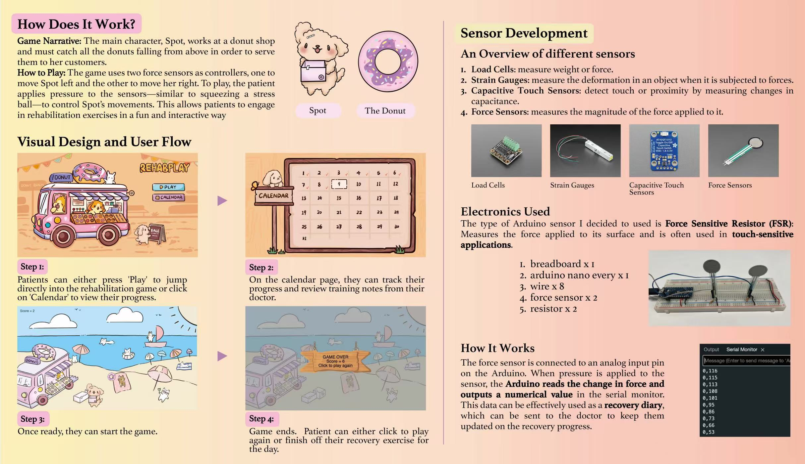
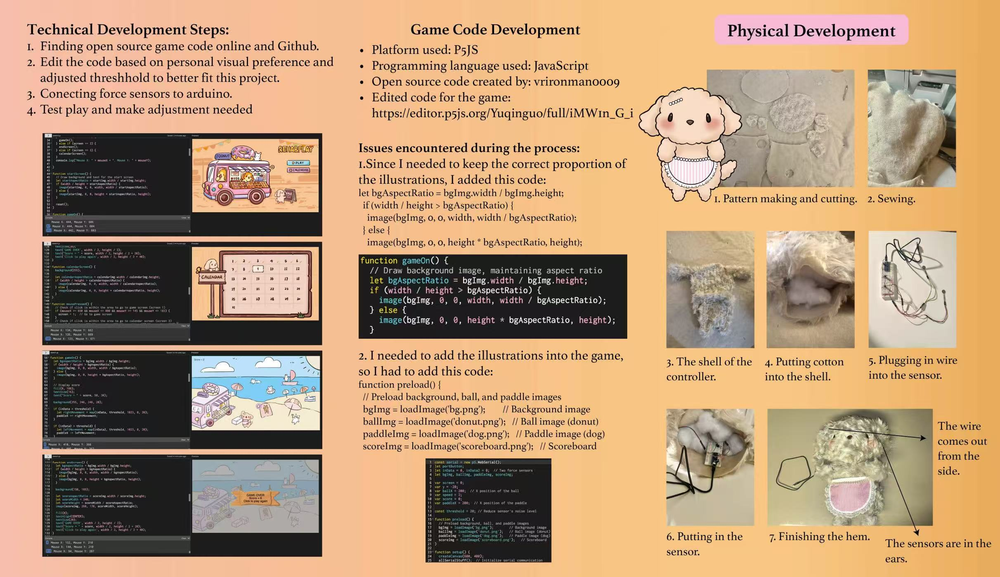
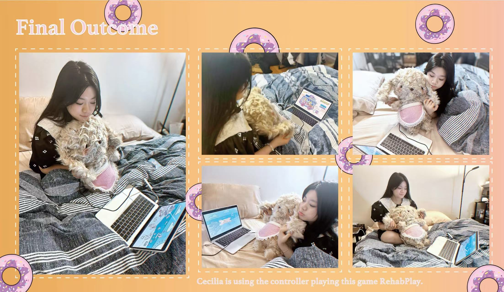

Rehabplay is a game-based rehabilitation system designed to support patients recovering from hand injuries by transforming repetitive therapy exercises into an engaging interactive experience. I was inspired by a child who struggled to stay motivated using a traditional stress ball during tendon recovery, which led me to explore how physical therapy could be redesigned through play. I developed a custom rehabilitation controller using Arduino and a force sensor that captures grip strength and translates it into real-time game input. The game itself was designed and illustrated by me and built in p5.js using JavaScript, where falling objects are controlled through pressure-based interaction. At the same time, the sensor data can be used to help clinicians observe training intensity and recovery progress. To increase emotional accessibility and user motivation, I also designed a soft toy–integrated controller form that makes the device feel more approachable and playful rather than clinical.
This project reflects my practice across creative coding, physical computing, sensor-based interaction design, and playful healthcare experience prototyping.




